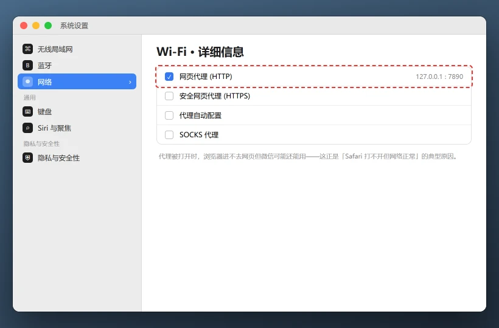

Mac Safari 打不开网页 / 只有浏览器上不了网怎么修
清理网站数据会退出部分网站登录并删除其本地缓存，不会删除书签和保存在其他应用中的密码。先确认问题只在 Safari，避免误改整个系统网络。
💡 一句话结论
微信、App Store 都能联网，只有 Safari 打不开，重点查扩展、网站数据、VPN/代理和 iCloud 私人中继。如果所有应用都不能联网，就不是 Safari 故障，先去修 Wi-Fi、DNS 或路由器。
⚡ 30 秒快速排查（先试这个）
- 打开 App Store 或微信，看其他应用能否联网。其他应用正常，继续查 Safari；全都不正常，先修网络。
- Safari 新建一个私人浏览窗口，打开
https://www.apple.com.cn。私人窗口正常，常见原因是扩展或网站数据。 - 临时关闭 VPN、代理、内容拦截器和 iCloud 私人中继，刷新同一个网页。
适用 / 不适用
适用：
- Safari 一直转圈、提示“无法连接服务器”或页面空白
- 其他浏览器和应用能正常打开同一网站
- 只有登录某些网站后异常，其他网站正常
- Safari 更新、安装扩展或切换网络后开始出错
不适用：
- 所有应用都不能联网 → 先检查 Wi-Fi、DNS 和路由器
- 只有某个网站打不开 → 可能是网站故障、地区限制或对方服务器问题
- 浏览器提示证书风险且无法绕过 → 不要忽略，先核对证书和代理
- 公司电脑安装了统一代理 → 联系 IT，不要自行关闭安全软件
开始前确认
- 能用一个非 Safari 应用测试网络
- 记得 Safari 里安装过哪些扩展
- 知道是否使用 VPN、公司代理或 iCloud 私人中继
- 暂时不要在报错网站输入密码或支付信息
怎么确认修好了
Safari 能连续打开 5 个不同 HTTPS 网站，登录页能正常加载；私人窗口和普通窗口都正常；重启 Mac、切换 Wi-Fi 与手机热点后再次测试，仍能正常访问。
还是不行？
- 所有应用都无法联网 → 检查 Wi-Fi、DNS、路由器和运营商
- 只有公司内网网站异常 → 企业代理环境排查
- App Store 也不能下载 → Mac App Store 下载卡住
- 浏览器代理设置反复被改 → 浏览器代理与 PAC 设置修复
- 网页提示证书风险 → 不要绕过警告，先核对域名、系统时间和代理
预防
- Safari 扩展只留必要的，并定期更新。
- 不在多个 VPN、代理和私人中继之间频繁叠加。
- 系统日期、时区和 macOS 安全更新保持最新。
- 遇到证书警告先停止输入账号密码，确认网站域名无误。
更新日志
| 日期 | 版本 | 变更 | 作者/审核 |
|---|---|---|---|
| 2026-10-27 | 1.0 | 首版：范围判断、扩展、网站数据、代理与 DNS 排查 | 内容组 |
分步骤
区分网络故障与 Safari 故障
目的：缩小范围，避免为了一个浏览器重装整台 Mac 的网络设置。
操作：

「Safari 打不开但其他应用正常」最常见的原因是代理：装了加速器或抓包工具后退出，代理勾选却没清掉。到「系统设置 → 网络 → 当前网络 → 详细信息 → 代理」把勾全部取消。 - 打开 App Store、邮件或其他联网应用。
- Safari 打开两个不同网站，例如 Apple 官网和一个常用搜索网站。
- 新建私人浏览窗口再试一次。
- 换一个网络（手机热点）测试。
预期结果：明确是“所有网络失败”“只 Safari 失败”还是“只有某个网站失败”。失败怎么办？
所有应用都失败 → 转向网络排障；私人窗口正常 → 继续步骤 2、3。关闭 Safari 扩展和内容拦截器
目的：过期或权限过大的扩展会拦截请求、注入脚本或让页面白屏。
操作：
- Safari → 设置 → 扩展。
- 逐个取消勾选扩展，每关一个就刷新网页测试。
- 重点检查广告拦截、翻译、下载、密码管理和网页美化扩展。
- 找到问题扩展后更新它；仍异常就移除，只从开发商官网或 App Store 重新安装。
预期结果：关闭某个扩展后网页立即恢复，其他网站也不再白屏。失败怎么办？
关掉全部扩展仍失败 → 继续步骤 3、4。处理单个网站的缓存与登录状态
目的：网站本地数据损坏时，可能只影响一个站点，清整机缓存反而没必要。
操作：
- Safari → 设置 → 隐私 → 管理网站数据。
- 搜索出问题的域名，选中后删除。
- 返回网站重新加载，必要时重新登录。
- 不要在不知道来源的弹窗里输入 Apple 账户或银行卡信息。
预期结果：该网站重新加载正常，其他网站登录和书签不受影响。失败怎么办？
所有网站都异常 → 在确认书签已同步后，再考虑清理更多 Safari 数据或新建测试用户。检查 VPN、代理、私人中继和日期时间
目的：安全连接、证书校验和网页请求都依赖这些设置。
操作：
- 关闭 VPN、网络加速器和公司代理，刷新网页。
- 系统设置 → Apple 账户 → iCloud → 私人中继，临时关闭后测试，完成后再决定是否恢复。
- 系统设置 → 网络 → 当前网络 → 详细信息 → 代理，确认没有陌生的自动代理脚本。
- 系统设置 → 通用 → 日期与时间，开启自动设置日期、时间和时区。
预期结果：关闭冲突项或校正时间后，HTTPS 网页能正常打开。失败怎么办？
只有公司网络异常 → 联系 IT；关闭安全代理后仍提示证书错误 → 停止访问该网站并核查证书。刷新 DNS 并重启 Safari
目的：DNS 缓存指向错误地址时，网站会持续提示找不到服务器。
操作：
- 完全退出 Safari：
Command+Q。 - 打开终端，运行：
sudo dscacheutil -flushcache sudo killall -HUP mDNSResponder- 输入管理员密码后重新打开 Safari。
- 如果使用了自定义 DNS，先恢复自动 DNS 或改用可信 DNS 测试。
预期结果：域名重新解析，Safari 能打开之前失败的网站。失败怎么办？
命令行报错 → 核对空格和大小写；仍失败 → 继续安全模式排查。- 完全退出 Safari：
安全模式与 macOS 更新
目的：系统级网络组件或第三方登录项异常时，安全模式可以帮助区分。
操作：
- Apple 芯片 Mac 关机后长按电源键进入启动选项，按住
Shift进入安全模式；Intel Mac 开机按住Shift。 - 在安全模式中打开 Safari 测试。
- 安全模式正常时，逐个退出 VPN、网络过滤、广告拦截和系统清理软件，再正常重启。
- 系统设置 → 通用 → 软件更新，安装可用的 macOS 和 Safari 安全更新。
预期结果：确认第三方软件或系统组件是否为元凶，更新后 Safari 稳定。失败怎么办？
安全模式也失败且所有浏览器异常 → 备份后联系 Apple 支持或检查路由器/运营商网络。- Apple 芯片 Mac 关机后长按电源键进入启动选项，按住
相关教程
最后更新：2026-10-27 · 复核：内容组
读者反馈
这篇教程解决你的问题了吗？
点一下告诉我们结果。「没解决」可以指出问题段落，管理员会回到原文核对并更新。